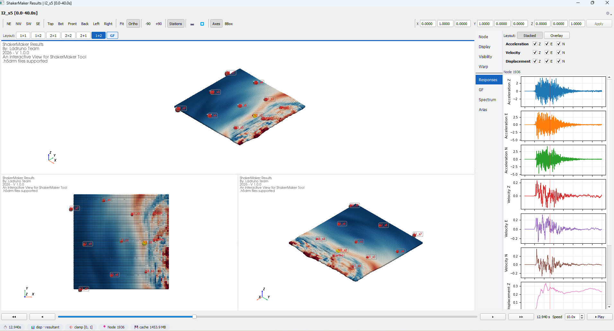

Interactive viewer¶
The optional viewer is a Qt + PyVista application for inspecting a
ShakerMakerData model in 3-D: point clouds, displacement warp, vector fields,
static overlays (elevation / Newmark Sa / Arias), node picking, playback, and
docked matplotlib analysis panels.
Install the extras first:
Launching¶

model.viewer() constructs a ViewerSession and, with
show=True, opens the Qt window. With show=False the session is a headless
data-access layer — scalars, traces, and spectra are served on demand with no GUI.
Architecture at a glance¶
ViewerSession <- orchestration / public API
|-- ViewerDataAdapter <- data + cache (HDF5, LRU series, GF tensors)
|-- ViewerState <- per-session display knobs
|-- ViewerMainWindow <- Qt window (only if show=True)
|-- TabbedMultiViewArea -> ViewPane -> ViewerScene (+ PaneDisplayState)
|-- side panel, toolbars, docks, trace panels, rupture tab
Every change flows through session.set_*() / session.apply_*(), which notify
the window; widgets subscribe and update. No widget pokes another widget
directly.
ViewerSession¶
The orchestrator and the public API. Notebook users normally create it via
model.viewer() rather than instantiating directly.
ViewerSession(
model_or_adapter, *, show=False, field=None, demand="accel",
component="resultant", time_index=0, selected_node=None, title=None,
cache_time_series=True, max_cache_bytes=None, max_cache_entries=8,
)
Driving the scene¶
The same actions the UI buttons trigger are available programmatically:
session.set_demand("vel") # accel / vel / disp / gf
session.set_component("z") # z / e / n / resultant (g11..g33 for gf)
session.select_node(42)
session.set_warp_enabled(True)
session.set_colormap("RdBu_r")
session.set_playing(True)
| Group | Representative methods |
|---|---|
| Time & playback | set_time_index · set_playing · toggle_playing · step_time · jump_time · set_playback_speed |
| Field & color | set_demand · set_component · set_colormap · set_color_range · set_clamp_enabled · set_show_scalar_bar |
| Selection | select_node · select_nearest_coordinate_m · clear_selection · add_nodes_to_multi_selection · toggle_node_in_multi_selection · set_selection_visibility |
| Warp | set_warp_enabled · set_warp_axes · set_warp_scale · set_ghost_warp_reference |
| Visibility | set_node_visibility · set_selection_labels_enabled · set_axes_grid_visible |
| Bulk apply | apply_display_settings · apply_warp_settings · apply_visibility_settings · apply_vector_field_settings · apply_static_color_settings · apply_panel_settings |
| Stations & transform | set_station_tags · set_show_station_tags · apply_display_transform |
| Lifecycle | show · close |
Reading current state¶
Query the live scene without touching it — useful headless:
scalars = session.current_scalars()
vmin, vmax = session.current_color_limits()
spectrum = session.current_spectrum()
arias = session.current_arias()
info = session.current_node_info()
Other readers include current_visible_points, current_warped_points,
current_vector_data, current_trace, current_accel_trace,
current_gf_tensor, current_time, current_visible_node_ids,
default_color_limits, suggested_warp_scale, and gf_subfault_count.
ViewerState¶
A validated dataclass holding every display knob: demand, component,
time_index, colormap (+ inversion / discrete bins / NaN & out-of-range
colors), legend layout, selection_visibility, warp (disp_warp_enabled,
warp_axes, warp_scale), vector-field settings, visibility toggles, and
playback. Each field has a typed setter that returns the canonical value. See the
viewer API for the full field list.
ViewerDataAdapter¶
The read/cache layer between the GUI and the model — the only piece that touches HDF5. It serves per-frame scalar snapshots, caches full time-series with an LRU budget, builds GF tensors, computes static overlays (elevation, Newmark-Sa, Arias), and resolves node picks via a KDTree.
Highlights: scalar_snapshot, scalar_series, prewarm_component_triplet,
trace, gf_tensor, spectrum, arias, nearest_node_id,
open_playback_handle / close_playback_handle, and the points / time /
available_demands / dataset_type properties.
Module map¶
| Module | Role |
|---|---|
session.py |
orchestration + public API |
state.py |
per-session display state |
adapter.py |
data + cache layer (HDF5) |
window.py |
Qt main window (menus, toolbars, docks, playback timer) |
multi_view.py · view_frame.py |
tabbed multi-viewport area + pane frames |
scene.py |
PyVista scene per pane (actors, overlays, HUD) |
pane_state.py |
per-pane overrides on top of ViewerState |
interaction.py |
custom VTK picking / rubber-band selection |
side_panel.py · properties_dock.py |
right-side editors and docks |
toolbar.py · controls.py |
themed toolbars and header / time controls |
information_panel.py · pipeline_browser.py |
info dock + scene tree |
trace_panel.py |
matplotlib Spectrum / Arias / Response / GF panels |
rupture_pane.py · rupture_adapter.py |
FFSP rupture tab + reader |
visual_editors.py · cmap_preview.py |
transfer-function / legend dialogs |
theme.py · colors.py · icons.py · busy_dialog.py · _imports.py |
theming, palettes, icons, progress dialog, optional-dep guard |
Reference¶
See the Interactive viewer API.